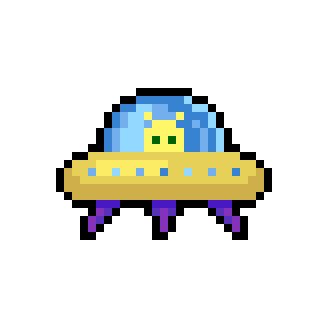

HYPERNOVA STRIKE

The Laser Beam is your ship's powerful Super Weapon, capable of dealing heavy damage to both standard aliens and bosses. It charges gradually over time, indicated by a blue energy bar that fills up as power builds. You can fire the Laser Beam at any charge level by pressing F, but the energy bar will decrease depending on how much power you use. If the bar is completely empty, it turns red as it slowly begins recharging, and the weapon cannot be activated. Once triggered, the Laser Beam enters a brief warm-up phase lasting a few seconds. During this time, the Laser Beam itself is disabled, but your main blasters remain fully operational. You must wait for the cooldown to finish until you can reuse the Laser Beam again. The energy bar returns to blue once the Laser Beam is ready for use again.


The green alien is the most comman enemy. It’s the basic enemy, appearing frequently throughout the game. The green alien moves at a moderate speed and occasionally, but not very often. It only takes a single shot to destroy, making it a manageable threat that keeps the action consistent without overwhelming you.
The next enemy is the yellow alien, which is less common than the green one but more dangerous. it only takes one shot to eliminate, but is much faster and shoots far more frequently then the green alien. its speed and rapid firing make it a serious challenge to dodge and survive. This will tests the your agility and awareness.
The rarest and most threatening enemy is the red alien. It doesn’t shoot at all—instead, it slowly moves across the screen, directly toward the player. If it gets close enough—within side-by-side range—it automatically damages the player by two hearts, even if it hasn’t visibly touched them. This alien is much bigger, meaning it takes two shots to destroy. Its a little less spawning then the other two but will spawn especially in higher rounds a lot.
You will begins the game with three hearts. Any time you get hit you will lose one heart. You will regain one heart every new wave You can only gain up to five hearts.

Every 5 rounds, a powerful boss will appear to challenge your skills. This boss moves quickly making it difficult to predict, and fires large energy beams that force you to dodge through tight gaps. It has more health than regular aliens, and a visible health bar will appear at the top of the screen during the fight. The boss can also summon enemy reinforcements to distract you or block your shots, giving it chances to strike. One of its dangerous attacks is a massive beam. THe boss will move side to side randomly, pause for 1 second, then unleash a powerful beam that lasts for 3 seconds. Afterward, it will continue moving side to side in a smaller raidius for 5 more seconds. This creates a total beam duration of 8 seconds. You'll need sharp reflexes and quick thinking to survive and defeat it.